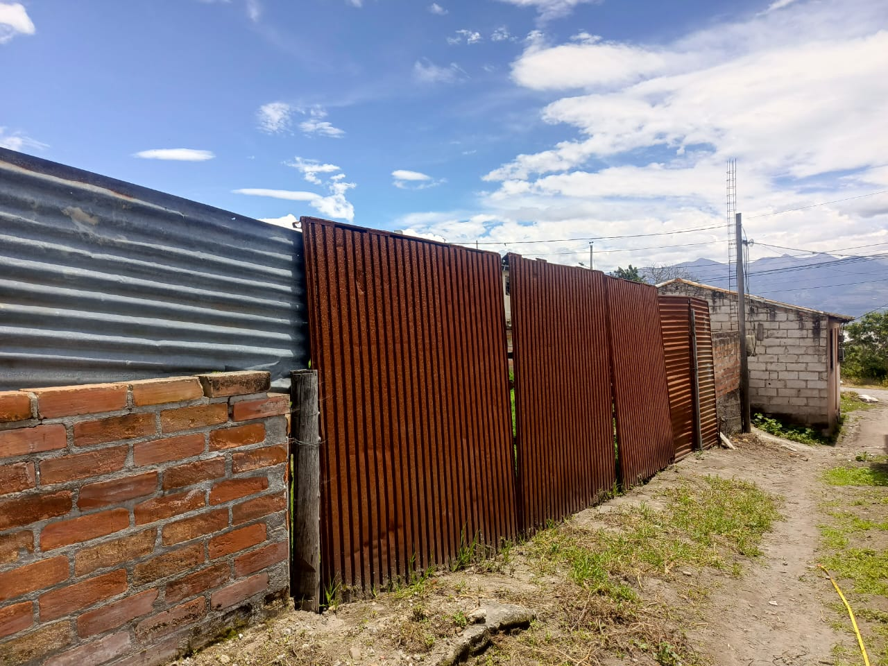
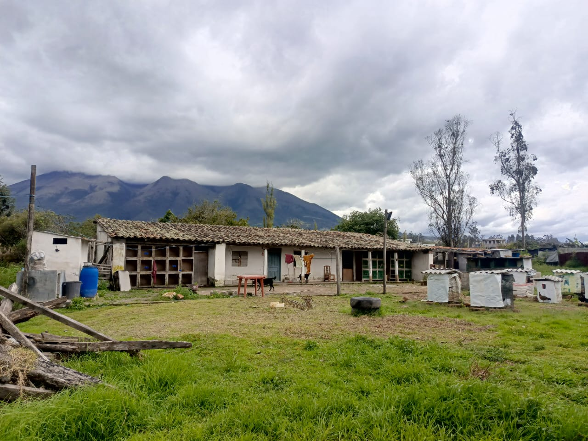
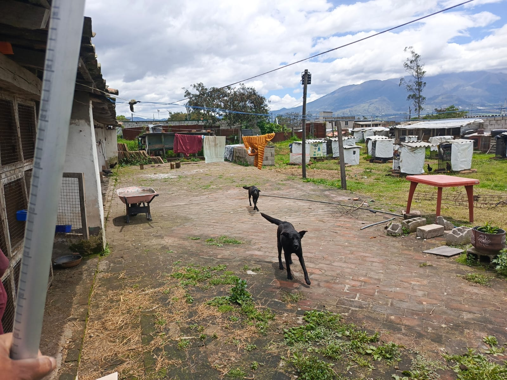
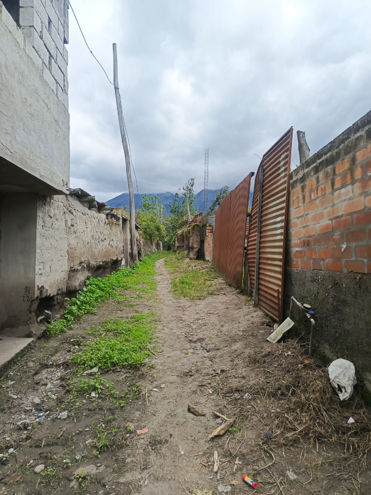

← volver al mapa
Casa - EC-RJ-153833
EC-RJ-153833 · casa · ANTONIO ANTE, Imbabura
★ Oferta destacada




Datos del remate
| Avalúo pericial | $38,233 |
| Tipo de bien | casa |
| Área de construcción | 125.00 m² |
| Cantón / Provincia | ANTONIO ANTE, Imbabura |
| Dirección / Sector | Natabuela |
| Señalamiento | Primer Señalamiento |
| Fecha de remate | 2026-08-18 |
| No. de proceso | 10309202300316 |
Análisis vs. mercado
| Avalúo por m² | $306/m² |
| Mediana de mercado en la zona | $541/m² |
| Descuento vs. mercado | 43.5% |
| Comparables usados | 90 |
| Radio de búsqueda | 2000 m |
| Puntaje | 86/100 |
Descripción completa del avalúo
el inmueble comprende de un lote de terreno de superficie de 1231,98 m2, se encuentraubicado en el sector rural de la parroquia natabuela del cantón antonio ante.al momento de la inspección se verifica que el acceso al lote de terreno es por el callejóns/n de un ancho de 2.30 metros, desde la calle flores vásquez, este callejón es de tierra, elinmueble cuenta con todos sus linderos definidos dentro del lote de terreno se encuentrauna casa con un área de implantación de 125,00 metros cuadrados.la casa esta constituida con paredes de tapia, cubierta de teja soportada en estructura demadera, puerta de madera, la casa en la actualidad está en regulares condiciones.cuenta con un patio de ladrillo frente a la casa de un área de 78,00 metros cuadrados elmismo que presenta un descuido en su mantenimiento, tiene una piedra de lavar y un baño.en el resto del terreno no se evidencia ninguna actividad de agricultura y tampoco deganadería.el predio cuenta con medidor de agua y medidor de energía electica.
Análisis de inversión (IA)
⚠ Dudosa — revisar bienEl descuento del 43.5% sobre la mediana de mercado suena atractivo y la muestra de comparables es sólida, pero varios factores estructurales generan dudas serias: acceso por callejón de tierra de 2.30 m sin nombre oficial, construcción en tapia y teja en condiciones regulares, y un lote rural grande que no produce ningún ingreso agrícola ni ganadero. Vale la pena investigar más solo si el precio final compensa los costos de rehabilitación y el riesgo de acceso limitado.
A favor:
- Descuento calculado del 43.5% sobre mediana de mercado con base amplia de 90 comparables, lo que da cierta confianza estadística al dato
- Lote de terreno amplio de 1,231.98 m², lo que representa un activo de suelo significativo en la zona
- Servicios básicos presentes: medidor de agua y medidor de energía eléctrica
- Linderos definidos, lo que sugiere que la delimitación predial está clara
- Área de construcción de 125 m² sobre un lote grande deja margen para desarrollo futuro
En contra:
- Construcción en tapia (tierra compactada) y cubierta de teja sobre estructura de madera: materiales de construcción vernácula con vida útil limitada y costos de mantenimiento o reemplazo elevados
- Estado de la construcción descrito como 'regulares condiciones', lo que implica deterioro observable y probable inversión en rehabilitación
- El patio de ladrillo presenta descuido en mantenimiento, indicando abandono o desatención del inmueble
- El resto del lote (más de 1,000 m²) no tiene ningún uso productivo, lo que significa que no genera retorno y puede implicar costos de limpieza o adecuación
- Ubicación en sector rural de Natabuela, lo que puede limitar la liquidez del activo al momento de revender
- Avalúo pericial de $38,233.24 es bajo en términos absolutos, lo que puede reflejar las limitaciones reales del bien
Riesgos a verificar:
- Acceso único por callejón sin nombre (s/n) de solo 2.30 metros de ancho y de tierra: ancho insuficiente para vehículos de carga o emergencias, y sin certeza de que exista servidumbre de paso legalmente constituida
- El callejón de acceso es de tierra, lo que puede volverse intransitable en época de lluvias y deprecia la funcionalidad del inmueble
- Construcción en tapia: este tipo de estructura es vulnerable a sismos, y Imbabura es zona de actividad sísmica; verificar si cumple normas mínimas de habitabilidad es crítico
- No se menciona escritura pública, registro en el Registro de la Propiedad ni situación legal del título: en remates judiciales esto es el primer punto a verificar
- No se describe el estado del techo de teja ni de la estructura de madera de soporte; el deterioro de estos elementos puede representar un costo de reposición mayor al descuento obtenido
- La descripción no menciona sistema de alcantarillado ni eliminación de aguas servidas, solo un baño: riesgo sanitario y de cumplimiento normativo
- Sector rural sin actividad económica visible en el terreno: verificar si existen restricciones de uso de suelo que limiten el desarrollo o cambio de uso
Generado por IA a partir de la descripción — no es asesoría legal ni financiera.
Esta ficha es una copia de lo publicado en el sitio oficial de remates
judiciales de la Función Judicial del Ecuador, para consulta — no
reemplaza el expediente judicial. remates.funcionjudicial.gob.ec no da
un link propio por remate, por eso se generó esta página aparte.
Antes de ofertar, el expediente debe revisarlo un abogado.